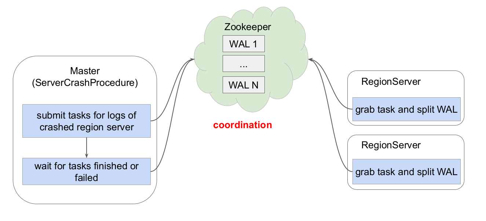
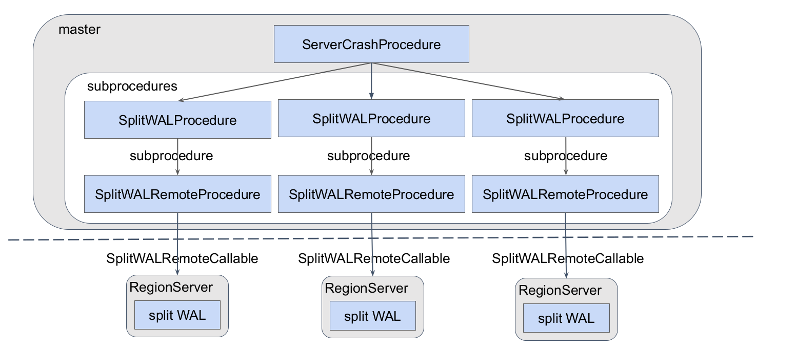
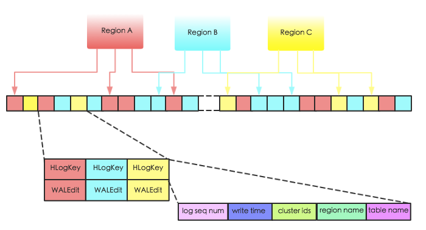
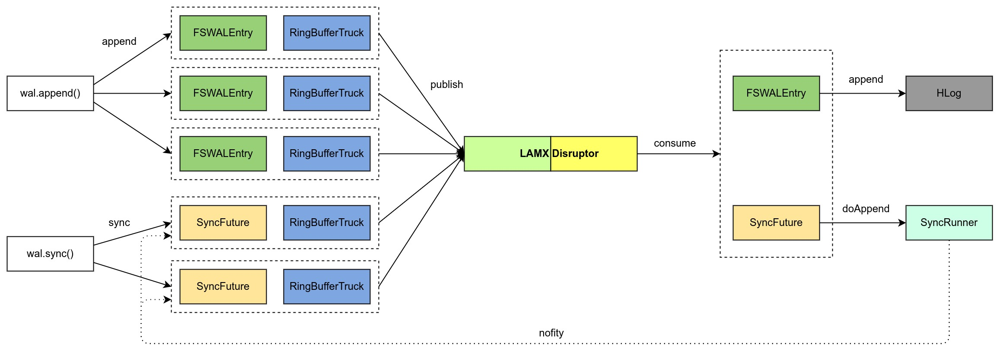

Ch04-HBase 之 HLog
April 23, 2019
Write-ahead logs (WALs)，HBase 2.0 之前，WAL 接口的实现是 HLog，所以先前大家也会将 WAL 称为 HLog。
在 HBase 2.0 之前，WAL 切分用的是 Split WAL based on ZK Coordination(常见的策略有 LogSpliting，Distributed Log Spliting，Distributed Log Replay，但是现在这些策略已经全部废除)。目前使用的是 WAL Splitting Based on Procedure V2。
1. 切分策略 #
1.1 Split WAL based on ZK Coordination #

- LogSpliting 这种算法是 HMaser 读取 HLog 文件，然后将其拆分到不同的 Region 目录下面，当 RegionServer 启动的时候，回放这些 HLog 文件，这样就完成了 HLog 的数据恢复工作，缺点也很明显严重依赖 HMaster，效率比较低。
- Distributed Log Spliting 这种算法则是 HMaster 将 HLog 包装成任务发布到 Zookeeper 的 /hbase/splitWAL 节点上，RegionServer 启动的时候通过竞争的方式去获取任务，然后将 HLog 复制到不同的 Region 目录下面进行回放。
- Distributed Log Replay 这种算法与 Distributed Log Spliting 类似，只是少了将 HLog 复制到 Region 目录的过程，RegionServer 启动的时候直接回放。
1.2 Split WAL based on Procedure v2 #

2. 文件结构 #
WAL 的实现类为 HLog，每个 Region Server 拥有一个 HLog 日志，所有 region 的写入都是写到同一个 HLog。下图表示同一个 Region Server 中的 3 个 region 共享一个 HLog。当数据写入时，是将数据对<HLogKey,WALEdit>按照顺序追加到 HLog 中，以获取最好的写入性能。

HLogKey 主要存储了 log sequence number，更新时间 write time，region name，table name 以及 cluster ids。其中 log sequncece number 作为 HFile 中一个重要的元数据，和 HLog 的生命周期息息相关；region name 和 table name 分别表征该段日志属于哪个 region 以及哪张表；cluster ids 用于将日志复制到集群中其他机器上。
WALEdit 用来表示一个事务中的更新集合，在之前的版本，如果一个事务中对一行 row R 中三列 c1，c2，c3 分别做了修改，那么 hlog 中会有 3 个对应的日志片段如下所示：
<logseq1-for-edit1>:<keyvalue-for-edit-c1>
<logseq2-for-edit2>:<keyvalue-for-edit-c2>
<logseq3-for-edit3>:<keyvalue-for-edit-c3>
然而，这种日志结构无法保证行级事务的原子性，假如刚好更新到 c2 之后发生宕机，那么就会产生只有部分日志写入成功的现象。为此，hbase 将所有对同一行的更新操作都表示为一个记录，如下：
<logseq#-for-entire-txn>:<WALEdit-for-entire-txn>
其中 WALEdit 会被序列化为格式<-1, # of edits, <KeyValue>, <KeyValue>, <KeyValue>>，比如<-1, 3, <keyvalue-for-edit-c1>, <keyvalue-for-edit-c2>, <keyvalue-for-edit-c3>>，其中 -1 作为标示符表征这种新的日志结构。
3. 写入流程 #
下图主要描述了 HRegion 中调用 append 和 sync 后，hbase 的 wal 线程流转模型。最左边是有多个 client 提交到 HRegion 的 append 和 sync 操作。

- 当调用 append 后 WALEdit 和 WALKey 会被封装成 FSWALEntry 类进而再封装成 RinbBufferTruck 类放入一个线程安全的 Buffer(LMAX Disruptor RingBuffer) 中。
- 当调用 sync 后会生成一个 SyncFuture 进而封装成 RinbBufferTruck 类同样放入这个 Buffer 中，然后工作线程此时会被阻塞等待被 notify() 唤醒。
在每个 Buffer 的最右边会有一个且只有一个线程专门去处理这些 RinbBufferTruck，如果是 FSWALEntry 则写入 HLog 文件。因为文件缓存的存在，这时候很可能 client 数据并没有落盘。所以进一步如果是 SyncFuture 会被批量的放到一个线程池中，异步的批量去刷盘，刷盘成功后唤醒工作线程完成 wal。
4. HLog 的生命周期 #
HLog 从产生到最后删除需要经历如下几个过程：
-
产生 所有涉及到数据的变更都会先写 HLog，除非是你关闭了 HLog。
-
滚动 HLog 的大小通过参数
hbase.regionserver.logroll.period控制，默认是 1 个小时，时间达到hbase.regionserver.logroll.period设置的时间，HBase 会创建一个新的 HLog 文件。这就实现了 HLog 滚动的目的。HBase 通过 hbase.regionserver.maxlogs 参数控制 HLog 的个数。滚动的目的，为了控制单个 HLog 文件过大的情况，方便后续的过期和删除。 -
过期 前面我们有讲到 sequenceid 这个东西，HLog 的过期依赖于对 sequenceid 的判断。HBase 会将 HLog 的 sequenceid 和 Hfile 最大的 sequenceid（刷新到的最新位置）进行比较，如果该 HLog 文件中的 sequenceid 比刷新的最新位置的 sequenceid 都要小，那么这个 HLog 就过期了，过期了以后，对应 HLog 会被移动到 .oldlogs 目录。
这里有个问题，为什么要将过期的 HLog 移动到 .oldlogs 目录，而不是直接删除呢？ 答案是因为 HBase 还有一个主从同步的功能，这个依赖 HLog 来同步 HBase 的变更，有一种情况不能删除 HLog，那就是 HLog 虽然过期，但是对应的 HLog 并没有同步完成，因此比较> 好的做好是移动到别的目录。再增加对应的检查和保留时间。
-
删除 如果 HBase 开启了 replication，当 replication 执行完一个 HLog 的时候，会删除 Zoopkeeper 上的对应 HLog 节点。在 HLog 被移动到 .oldlogs 目录后，HBase 每隔
hbase.master.cleaner.interval（默认 60 秒）时间会去检查.oldlogs 目录下的所有 HLog，确认对应的 Zookeeper 的 HLog 节点是否被删除，如果 Zookeeper 上不存在对应的 HLog 节点，那么就直接删除对应的 HLog。hbase.master.logcleaner.ttl（默认 10 分钟）这个参数设置 HLog 在 .oldlogs 目录保留的最长时间。
5. 持久化等级 #
| 持久化等级 | 说明 |
|---|---|
| SKIP_WAL | 只写缓存，不写 HLog 日志。可以极大的提升写入性能，但是数据有丢失的风险。 |
| ASYNC_WAL | 异步将数据写入 HLog 日志中。 |
| SYNC_WAL | 同步将数据写入日志文件中，需要注意的是数据只是被写入文件系统中，并没有真正落盘。 |
| FSYNC_WAL | 同步将数据写入日志文件并强制落盘。最严格的日志写入等级，可以保证数据不会丢失，但是性能相对比较差。 |
| USER_DEFAULT | 默认如果用户没有指定持久化等级，HBase 使用 SYNC_WAL 等级持久化数据。 |